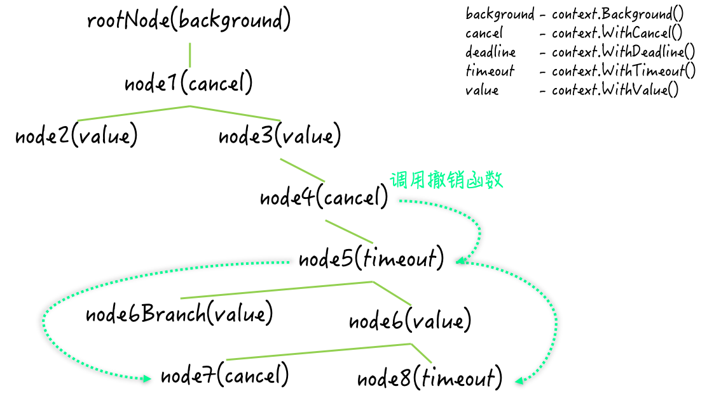

- 00 导读 写给0基础入门的Go语言学习者.md.html
- 00 导读 学习专栏的正确姿势.md.html
- 00 开篇词 跟着学，你也能成为Go语言高手.md.html
- 01 工作区和GOPATH.md.html
- 02 命令源码文件.md.html
- 03 库源码文件.md.html
- 04 程序实体的那些事儿（上）.md.html
- 05 程序实体的那些事儿（中）.md.html
- 06 程序实体的那些事儿 （下）.md.html
- 07 数组和切片.md.html
- 08 container包中的那些容器.md.html
- 09 字典的操作和约束.md.html
- 10 通道的基本操作.md.html
- 11 通道的高级玩法.md.html
- 12 使用函数的正确姿势.md.html
- 13 结构体及其方法的使用法门.md.html
- 14 接口类型的合理运用.md.html
- 15 关于指针的有限操作.md.html
- 16 go语句及其执行规则（上）.md.html
- 17 go语句及其执行规则（下）.md.html
- 18 if语句、for语句和switch语句.md.html
- 19 错误处理（上）.md.html
- 20 错误处理 （下）.md.html
- 21 panic函数、recover函数以及defer语句 （上）.md.html
- 22 panic函数、recover函数以及defer语句（下）.md.html
- 23 测试的基本规则和流程 （上）.md.html
- 24 测试的基本规则和流程（下）.md.html
- 25 更多的测试手法.md.html
- 26 sync.Mutex与sync.RWMutex.md.html
- 27 条件变量sync.Cond （上）.md.html
- 28 条件变量sync.Cond （下）.md.html
- 29 原子操作（上）.md.html
- 30 原子操作（下）.md.html
- 31 sync.WaitGroup和sync.Once.md.html
- 32 context.Context类型.md.html
- 33 临时对象池sync.Pool.md.html
- 34 并发安全字典sync.Map （上）.md.html
- 35 并发安全字典sync.Map (下).md.html
- 36 unicode与字符编码.md.html
- 37 strings包与字符串操作.md.html
- 38 bytes包与字节串操作（上）.md.html
- 39 bytes包与字节串操作（下）.md.html
- 40 io包中的接口和工具 （上）.md.html
- 41 io包中的接口和工具 （下）.md.html
- 42 bufio包中的数据类型 （上）.md.html
- 43 bufio包中的数据类型（下）.md.html
- 44 使用os包中的API （上）.md.html
- 45 使用os包中的API （下）.md.html
- 46 访问网络服务.md.html
- 47 基于HTTP协议的网络服务.md.html
- 48 程序性能分析基础（上）.md.html
- 49 程序性能分析基础（下）.md.html
- 尾声 愿你披荆斩棘，所向无敌.md.html
- 新年彩蛋 完整版思考题答案.md.html
- 捐赠
32 context.Context类型
我们在上篇文章中讲到了sync.WaitGroup类型：一个可以帮我们实现一对多goroutine协作流程的同步工具。
在使用WaitGroup值的时候，我们最好用“先统一Add，再并发Done，最后Wait”的标准模式来构建协作流程。
如果在调用该值的Wait方法的同时，为了增大其计数器的值，而并发地调用该值的Add方法，那么就很可能会引发panic。
这就带来了一个问题，如果我们不能在一开始就确定执行子任务的goroutine的数量，那么使用WaitGroup值来协调它们和分发子任务的goroutine，就是有一定风险的。一个解决方案是：分批地启用执行子任务的goroutine。
前导内容：WaitGroup值补充知识
我们都知道，WaitGroup值是可以被复用的，但需要保证其计数周期的完整性。尤其是涉及对其Wait方法调用的时候，它的下一个计数周期必须要等到，与当前计数周期对应的那个Wait方法调用完成之后，才能够开始。
我在前面提到的可能会引发panic的情况，就是由于没有遵循这条规则而导致的。
只要我们在严格遵循上述规则的前提下，分批地启用执行子任务的goroutine，就肯定不会有问题。具体的实现方式有不少，其中最简单的方式就是使用for循环来作为辅助。这里的代码如下：
func coordinateWithWaitGroup() {
total := 12
stride := 3
var num int32
fmt.Printf("The number: %d [with sync.WaitGroup]\n", num)
var wg sync.WaitGroup
for i := 1; i <= total; i = i + stride {
wg.Add(stride)
for j := 0; j < stride; j++ {
go addNum(&num, i+j, wg.Done)
}
wg.Wait()
}
fmt.Println("End.")
}
这里展示的coordinateWithWaitGroup函数，就是上一篇文章中同名函数的改造版本。而其中调用的addNum函数，则是上一篇文章中同名函数的简化版本。这两个函数都已被放置在了demo67.go文件中。
我们可以看到，经过改造后的coordinateWithWaitGroup函数，循环地使用了由变量wg代表的WaitGroup值。它运用的依然是“先统一Add，再并发Done，最后Wait”的这种模式，只不过它利用for语句，对此进行了复用。
好了，至此你应该已经对WaitGroup值的运用有所了解了。不过，我现在想让你使用另一种工具来实现上面的协作流程。
我们今天的问题就是：怎样使用context包中的程序实体，实现一对多的goroutine协作流程？
更具体地说，我需要你编写一个名为coordinateWithContext的函数。这个函数应该具有上面coordinateWithWaitGroup函数相同的功能。
显然，你不能再使用sync.WaitGroup了，而要用context包中的函数和Context类型作为实现工具。这里注意一点，是否分批启用执行子任务的goroutine其实并不重要。
我在这里给你一个参考答案。
func coordinateWithContext() {
total := 12
var num int32
fmt.Printf("The number: %d [with context.Context]\n", num)
cxt, cancelFunc := context.WithCancel(context.Background())
for i := 1; i <= total; i++ {
go addNum(&num, i, func() {
if atomic.LoadInt32(&num) == int32(total) {
cancelFunc()
}
})
}
<-cxt.Done()
fmt.Println("End.")
}
在这个函数体中，我先后调用了context.Background函数和context.WithCancel函数，并得到了一个可撤销的context.Context类型的值（由变量cxt代表），以及一个context.CancelFunc类型的撤销函数（由变量cancelFunc代表）。
在后面那条唯一的for语句中，我在每次迭代中都通过一条go语句，异步地调用addNum函数，调用的总次数只依据了total变量的值。
请注意我给予addNum函数的最后一个参数值。它是一个匿名函数，其中只包含了一条if语句。这条if语句会“原子地”加载num变量的值，并判断它是否等于total变量的值。
如果两个值相等，那么就调用cancelFunc函数。其含义是，如果所有的addNum函数都执行完毕，那么就立即通知分发子任务的goroutine。
这里分发子任务的goroutine，即为执行coordinateWithContext函数的goroutine。它在执行完for语句后，会立即调用cxt变量的Done函数，并试图针对该函数返回的通道，进行接收操作。
由于一旦cancelFunc函数被调用，针对该通道的接收操作就会马上结束，所以，这样做就可以实现“等待所有的addNum函数都执行完毕”的功能。
问题解析
context.Context类型（以下简称Context类型）是在Go 1.7发布时才被加入到标准库的。而后，标准库中的很多其他代码包都为了支持它而进行了扩展，包括：os/exec包、net包、database/sql包，以及runtime/pprof包和runtime/trace包，等等。
Context类型之所以受到了标准库中众多代码包的积极支持，主要是因为它是一种非常通用的同步工具。它的值不但可以被任意地扩散，而且还可以被用来传递额外的信息和信号。
更具体地说，Context类型可以提供一类代表上下文的值。此类值是并发安全的，也就是说它可以被传播给多个goroutine。
由于Context类型实际上是一个接口类型，而context包中实现该接口的所有私有类型，都是基于某个数据类型的指针类型，所以，如此传播并不会影响该类型值的功能和安全。
Context类型的值（以下简称Context值）是可以繁衍的，这意味着我们可以通过一个Context值产生出任意个子值。这些子值可以携带其父值的属性和数据，也可以响应我们通过其父值传达的信号。
正因为如此，所有的Context值共同构成了一颗代表了上下文全貌的树形结构。这棵树的树根（或者称上下文根节点）是一个已经在context包中预定义好的Context值，它是全局唯一的。通过调用context.Background函数，我们就可以获取到它（我在coordinateWithContext函数中就是这么做的）。
这里注意一下，这个上下文根节点仅仅是一个最基本的支点，它不提供任何额外的功能。也就是说，它既不可以被撤销（cancel），也不能携带任何数据。
除此之外，context包中还包含了四个用于繁衍Context值的函数，即：WithCancel、WithDeadline、WithTimeout和WithValue。
这些函数的第一个参数的类型都是context.Context，而名称都为parent。顾名思义，这个位置上的参数对应的都是它们将会产生的Context值的父值。
WithCancel函数用于产生一个可撤销的parent的子值。在coordinateWithContext函数中，我通过调用该函数，获得了一个衍生自上下文根节点的Context值，和一个用于触发撤销信号的函数。
而WithDeadline函数和WithTimeout函数则都可以被用来产生一个会定时撤销的parent的子值。至于WithValue函数，我们可以通过调用它，产生一个会携带额外数据的parent的子值。
到这里，我们已经对context包中的函数和Context类型有了一个基本的认识了。不过这还不够，我们再来扩展一下。
知识扩展
问题1：“可撤销的”在context包中代表着什么？“撤销”一个Context值又意味着什么？
我相信很多初识context包的Go程序开发者，都会有这样的疑问。确实，“可撤销的”（cancelable）这个词在这里是比较抽象的，很容易让人迷惑。我这里再来解释一下。
这需要从Context类型的声明讲起。这个接口中有两个方法与“撤销”息息相关。Done方法会返回一个元素类型为struct{}的接收通道。不过，这个接收通道的用途并不是传递元素值，而是让调用方去感知“撤销”当前Context值的那个信号。
一旦当前的Context值被撤销，这里的接收通道就会被立即关闭。我们都知道，对于一个未包含任何元素值的通道来说，它的关闭会使任何针对它的接收操作立即结束。
正因为如此，在coordinateWithContext函数中，基于调用表达式cxt.Done()的接收操作，才能够起到感知撤销信号的作用。
除了让Context值的使用方感知到撤销信号，让它们得到“撤销”的具体原因，有时也是很有必要的。后者即是Context类型的Err方法的作用。该方法的结果是error类型的，并且其值只可能等于context.Canceled变量的值，或者context.DeadlineExceeded变量的值。
前者用于表示手动撤销，而后者则代表：由于我们给定的过期时间已到，而导致的撤销。
你可能已经感觉到了，对于Context值来说，“撤销”这个词如果当名词讲，指的其实就是被用来表达“撤销”状态的信号；如果当动词讲，指的就是对撤销信号的传达；而“可撤销的”指的则是具有传达这种撤销信号的能力。
我在前面讲过，当我们通过调用context.WithCancel函数产生一个可撤销的Context值时，还会获得一个用于触发撤销信号的函数。
通过调用这个函数，我们就可以触发针对这个Context值的撤销信号。一旦触发，撤销信号就会立即被传达给这个Context值，并由它的Done方法的结果值（一个接收通道）表达出来。
撤销函数只负责触发信号，而对应的可撤销的Context值也只负责传达信号，它们都不会去管后边具体的“撤销”操作。实际上，我们的代码可以在感知到撤销信号之后，进行任意的操作，Context值对此并没有任何的约束。
最后，若再深究的话，这里的“撤销”最原始的含义其实就是，终止程序针对某种请求（比如HTTP请求）的响应，或者取消对某种指令（比如SQL指令）的处理。这也是Go语言团队在创建context代码包，和Context类型时的初衷。
如果我们去查看net包和database/sql包的API和源码的话，就可以了解它们在这方面的典型应用。
问题2：撤销信号是如何在上下文树中传播的？
我在前面讲了，context包中包含了四个用于繁衍Context值的函数。其中的WithCancel、WithDeadline和WithTimeout都是被用来基于给定的Context值产生可撤销的子值的。
context包的WithCancel函数在被调用后会产生两个结果值。第一个结果值就是那个可撤销的Context值，而第二个结果值则是用于触发撤销信号的函数。
在撤销函数被调用之后，对应的Context值会先关闭它内部的接收通道，也就是它的Done方法会返回的那个通道。
然后，它会向它的所有子值（或者说子节点）传达撤销信号。这些子值会如法炮制，把撤销信号继续传播下去。最后，这个Context值会断开它与其父值之间的关联。

（在上下文树中传播撤销信号）
我们通过调用context包的WithDeadline函数或者WithTimeout函数生成的Context值也是可撤销的。它们不但可以被手动撤销，还会依据在生成时被给定的过期时间，自动地进行定时撤销。这里定时撤销的功能是借助它们内部的计时器来实现的。
当过期时间到达时，这两种Context值的行为与Context值被手动撤销时的行为是几乎一致的，只不过前者会在最后停止并释放掉其内部的计时器。
最后要注意，通过调用context.WithValue函数得到的Context值是不可撤销的。撤销信号在被传播时，若遇到它们则会直接跨过，并试图将信号直接传给它们的子值。
问题 3：怎样通过Context值携带数据？怎样从中获取数据？
既然谈到了context包的WithValue函数，我们就来说说Context值携带数据的方式。
WithValue函数在产生新的Context值（以下简称含数据的Context值）的时候需要三个参数，即：父值、键和值。与“字典对于键的约束”类似，这里键的类型必须是可判等的。
原因很简单，当我们从中获取数据的时候，它需要根据给定的键来查找对应的值。不过，这种Context值并不是用字典来存储键和值的，后两者只是被简单地存储在前者的相应字段中而已。
Context类型的Value方法就是被用来获取数据的。在我们调用含数据的Context值的Value方法时，它会先判断给定的键，是否与当前值中存储的键相等，如果相等就把该值中存储的值直接返回，否则就到其父值中继续查找。
如果其父值中仍然未存储相等的键，那么该方法就会沿着上下文根节点的方向一路查找下去。
注意，除了含数据的Context值以外，其他几种Context值都是无法携带数据的。因此，Context值的Value方法在沿路查找的时候，会直接跨过那几种值。
如果我们调用的Value方法的所属值本身就是不含数据的，那么实际调用的就将会是其父辈或祖辈的Value方法。这是由于这几种Context值的实际类型，都属于结构体类型，并且它们都是通过“将其父值嵌入到自身”，来表达父子关系的。
最后，提醒一下，Context接口并没有提供改变数据的方法。因此，在通常情况下，我们只能通过在上下文树中添加含数据的Context值来存储新的数据，或者通过撤销此种值的父值丢弃掉相应的数据。如果你存储在这里的数据可以从外部改变，那么必须自行保证安全。
总结
我们今天主要讨论的是context包中的函数和Context类型。该包中的函数都是用于产生新的Context类型值的。Context类型是一个可以帮助我们实现多goroutine协作流程的同步工具。不但如此，我们还可以通过此类型的值传达撤销信号或传递数据。
Context类型的实际值大体上分为三种，即：根Context值、可撤销的Context值和含数据的Context值。所有的Context值共同构成了一颗上下文树。这棵树的作用域是全局的，而根Context值就是这棵树的根。它是全局唯一的，并且不提供任何额外的功能。
可撤销的Context值又分为：只可手动撤销的Context值，和可以定时撤销的Context值。
我们可以通过生成它们时得到的撤销函数来对其进行手动的撤销。对于后者，定时撤销的时间必须在生成时就完全确定，并且不能更改。不过，我们可以在过期时间达到之前，对其进行手动的撤销。
一旦撤销函数被调用，撤销信号就会立即被传达给对应的Context值，并由该值的Done方法返回的接收通道表达出来。
“撤销”这个操作是Context值能够协调多个goroutine的关键所在。撤销信号总是会沿着上下文树叶子节点的方向传播开来。
含数据的Context值可以携带数据。每个值都可以存储一对键和值。在我们调用它的Value方法的时候，它会沿着上下文树的根节点的方向逐个值的进行查找。如果发现相等的键，它就会立即返回对应的值，否则将在最后返回nil。
含数据的Context值不能被撤销，而可撤销的Context值又无法携带数据。但是，由于它们共同组成了一个有机的整体（即上下文树），所以在功能上要比sync.WaitGroup强大得多。
思考题
今天的思考题是：Context值在传达撤销信号的时候是广度优先的，还是深度优先的？其优势和劣势都是什么？
© 2019 - 2023 Liangliang Lee. Powered by gin and hexo-theme-book.